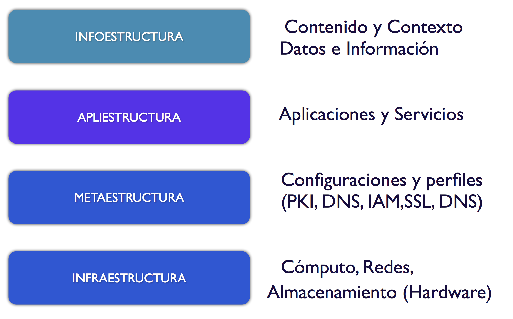
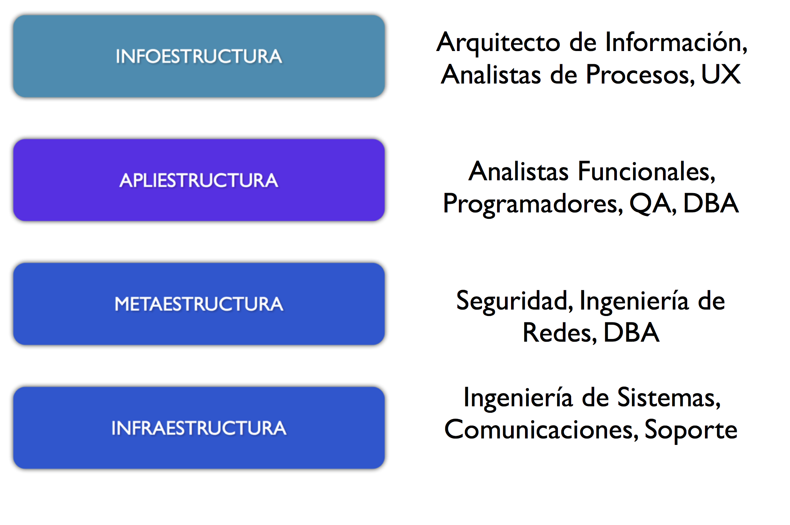

Roles y Funciones
Esta es una de mis fotografías favoritas, una bastante famosa, que muestra a los trabajadores que construían el edificio RCA en el Rockefeller Center, disfrutando su almuerzo en una de las vigas de este edificio.
Hay muchas fotos similares de aquella época, que muestran a estos obreros constructores trabajando despreocupadamente entre las vigas de estas enormes estructuras de acero, sin ninguno de los implementos de seguridad habituales de nuestros tiempos.
Es por eso que nos llama la atención. Se dice que este fue un montaje publicitario de aquella época por parte del Rockefeller Center. De todas maneras, no dejan de ser fotos impresionantes. Los trabajadores realmente estaban allí, y la foto se tomó a esas alturas.
Se dice que dada la situación económica de esos años de depresión, los obreros estaban dispuestos a asumir estos trabajos sin ningún tipo de seguridad personal. Esto es algo que ya no toleraríamos.
Lo otro que me llama la atención de esta fotografía es la disposición de los trabajadores dentro de la estructura. Es una imagen literal de lo que hablaremos sobre la disposición de actividades dentro de la estructura de una arquitectura de soluciones de software.
¿Quién está a cargo de qué? De eso es lo que nos preocuparemos en este post que es complementario al anterior sobre estructura.
Recordemos el modelo de Hoff de las cuatro "estructuras" que cimentan una arquitectura de aplicaciones moderna:

En cada una de las capas de este modelo tenemos que existen uno o más roles que se deben cumplir, los que deben ser ejecutados por distintos profesionales TI.
Las operaciones en TI se han especializado y la mejor forma de visualizar el ámbito de cada una en la actualidad es, en mi opinión, mediante el siguiente diagrama, que es el Hoff, pero con los roles y funciones dibujados al lado de cada capa.

En concordancia con cada capa hay roles y funciones adecuadas, hay algunos que se mueven en más de una capa, por ejemplo, en mi visión personal, un buen programador conoce de todas las capas, pero es frecuente que el programador sea visto como alguien que se concentra en la apliestructura.
El rol de arquitecto, como “jefe constructor" es disponer al equipo a lo largo de estas capas, relacionarse con cada profesional a cargo de cada capa, o de aspectos específicos de una. Por ejemplo, es labor del arquitecto asegurarse de que el ingeniero de seguridad aplique las reglas adecuadas en los firewalls, o instruir al DBA de que mantenga actualizado el diccionario de datos de las distintas aplicaciones. El arquitecto, en mi visión, tiene la misión de supervisar el correcto funcionamiento de cada una de las cuatro estructuras sobre las que se soporta la aplicación o sistema. Para esto delega la ejecución de tareas específicas de cada capa al profesional o profesionales especializados en cada estructura.
Es por esto que la imagen de la fotografía me parece una representación literal de esta idea, pues tal como en la imagen de los obreros sobre la viga, debemos imaginar que cada una de las 4 estructuras son planos que sostienen nuestra aplicación, y en cada uno de estos planos encontramos a los profesionales que se desenvuelven en estos, ejecutando su labor, coordinadamente, en distintos instantes de tiempo.
Esto es realmente muy sencillo de expresar, pero aunque no lo parezca, en muchas ocasiones no es entendido por los administradores, o los arquitectos. La separación de funciones es útil, y permite deslindar responsabilidades. Esto permite dar robustez. Lo importante es que debe haber un diálogo entre los participantes de cada capa, todo esto guiado, y orquestado por el arquitecto.
Es el arquitecto el encargado de garantizar la armonía entre estas cuatro capas. El debe ayudar a generar el diálogo entre los miembros del equipo que operan en los distintos niveles. La disposición en este diagrama tampoco implica de que haya actividades más importantes que otras, o que deba procederse en la construcción de abajo hacia arriba, o a la inversa. Este es un diagrama para entender que existen cuatro vigas fundamentales que deben ser atendidas apropiadamente. Es imposible separarlas una de otras. El software no sirve sin hardware, no hay información sin infraestructura que la soporte. Si no hay acceso de redes no podemos llegar a nuestros datos, etc. Todo está relacionado y conectado. Es por eso que es complejo gestionar una arquitectura moderna de aplicaciones. Este modelo nos permite conceptualizar y organizar la forma en que desarrollaremos nuestro proyecto.
Hoy en día pensar en que una aplicación se construye y se deja operando es demasiado simplista, el paso a producción es simplemente el primer paso de muchos. Una aplicación moderna es cambiante, porque en realidad ya no ofrecemos soluciones empaquetadas, que es lo que implica de cierta manera lo que sugiere la palabra aplicación. Hoy en día estamos de lleno en la era de los servicios, de información, de procesamiento, de descubrimiento, etc. Los equipos están en permanente movimiento sosteniendo los servicios. La apliestructura está al servicio de la infraestructura que es la que define los procesos y los requerimientos de información.
Así que no debe considerarse que una arquitectura de software, o mejor, una arquitectura de software como servicio, es algo estático. Esos tiempos ya pasaron, el cambio permanente de la arquitectura es lo que debemos considerar. Lo que tenemos que diseñar son arquitecturas dinámicas, o mejor aún patrones, o reglas, que permitan evolucionar de forma compleja, respondiendo a los cambios del entorno de negocios del servicio. Algo sobre lo que hablaremos más adelante.